Windows
Installer with the Lightroom Classic plugin.
Free and open source · Windows · macOS · Linux
WildID identifies the animals in your photos and writes the result where you already work, as keywords and collections in Lightroom Classic. Select a shoot, click Identify, and each photo gets its scientific and common name and a place in a class, genus and species tree. The recognition runs on your own computer with BioCLIP 2, an open vision model for biology, so no photo is uploaded and there is no subscription. Answers the model is unsure about are flagged for review. WildID is built for a strong NVIDIA graphics card or a Mac with Apple Silicon, and also runs, more slowly, on a processor alone.
Installer with the Lightroom Classic plugin.
Download with the Lightroom Classic plugin, installed from Terminal.
Command-line tool, installed from source.
WildID has two parts. A plugin inside Lightroom Classic adds the menu entries and writes results into your catalog. An engine outside Lightroom does the recognition. The plugin starts it when you need it, it keeps the model loaded while you work, and it shuts down after 15 quiet minutes so the graphics card is free again.
When you click Identify, the plugin passes the engine the file paths of the selected photos. For RAW files the engine reads the preview that the camera embedded in the file, so nothing is developed or converted. MegaDetector, an open animal detector, finds the animal and crops to it, which helps most with small and distant subjects. BioCLIP 2 then compares the crop with the names of 867,455 taxa from the TreeOfLife-200M dataset and ranks them. If you give WildID a place, it only considers species that iNaturalist observers have recorded there, about 1,400 for Kenya.
The best match becomes a keyword hierarchy of class, genus and species, with the common name stored as a synonym, and the photo is filed into the matching collection. WildID flags a photo for review when the best score is low, or when the answer without the place list falls outside that list. It never changes your photo files and it uploads nothing.
The default model is BioCLIP 2, published by researchers at the Imageomics Institute. BioCLIP 2.5, a larger model from the same team, can be chosen for each run. WildID uses both exactly as published.
Every identification comes from BioCLIP, a research model. WildID prepares the photo, asks the model and files its answer. It has no opinion of its own and it does not correct the model.
When a species name is wrong, the cause is almost always one of two things. The first is a limit of the model: two species that look alike, an animal that is small or half hidden, a species the model has seen little of. The second is a setting: no place list, the wrong place, the crop switched off, or BioCLIP 2.5 used on reptiles, which it does not know. A fault in WildID itself is the least likely explanation.
Treat every name as a suggestion. Look through the review collection, and check an identification before you publish it or use it as a record. What to check when a name is wrong
WildID is at its best on a powerful NVIDIA GPU with plenty of memory. It has been tested on exactly one card, an NVIDIA GeForce RTX 4090 with 24 GB. On that card the engine identifies about 10 photos per second from 61-megapixel RAW files with the crop switched on, and it holds about 7 GB of graphics memory with BioCLIP 2 or about 10 GB with BioCLIP 2.5. Smaller and older NVIDIA cards should work as long as the model fits into their memory, but nobody has tried them yet.
On a Mac, WildID uses the graphics processor of Apple Silicon. It has been tested on exactly one Mac, a MacBook Pro with an M5 Pro chip and 48 GB of memory. On the command line that Mac identifies about 16 photos per second from RAW files with the crop switched on, about half the speed of the RTX 4090 on the same files, and the engine holds about 12 GB of memory with BioCLIP 2 or about 13 GB with BioCLIP 2.5. No other Mac has been tried.
Without a suitable graphics card WildID runs on the processor alone. That works, and it is slower: expect seconds per photo where the RTX 4090 needs a fraction of a second.
WildID is free software under the AGPL-3.0 licence. There is no account, no licence key, no telemetry and no paid tier. The source code and every release are on GitHub, and the BioCLIP models are open as well.
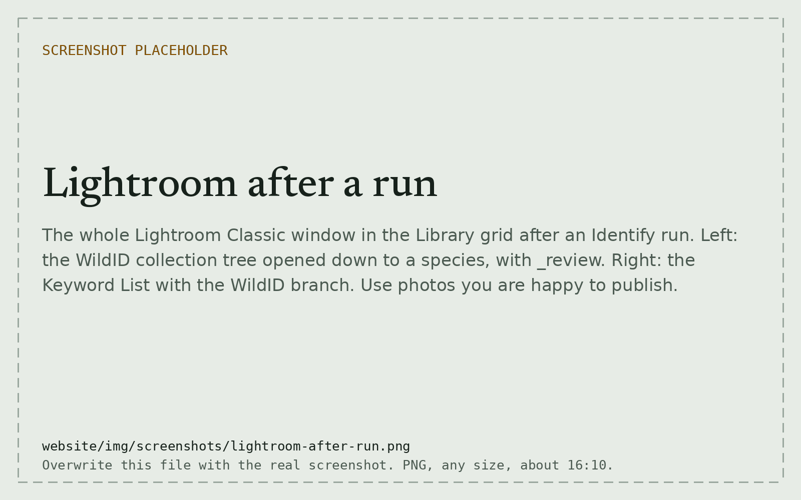
BioCLIP 2 and BioCLIP 2.5: what they are, how they differ and which one to pick.
Measured numbers from the RTX 4090 and from one Mac, memory per model, and what to expect on a CPU.
Why misidentifications happen, how often in our tests, and the settings that reduce them.
Limit the candidates to species recorded where you took the photo.
Keywords, collections, metadata fields, re-runs and the review workflow.
What is downloaded once, and why your photos never leave your computer.
Whole folders, JSON output and keyword sidecars without Lightroom.
The AGPL-3.0 licence, and the models and data WildID builds on.
This guide is for photographers who want WildID inside Lightroom Classic. You need no Python and no command line. One text window appears during setup. It asks a few questions and downloads the model.
Get WildID-Setup-<version>.exe from the latest release. The file is small, about 20 MB, because the large parts are downloaded during the installation.
Each release lists the SHA-256 checksum of the installer in SHA256SUMS.txt. To compare, open PowerShell in your Downloads folder and run:
Get-FileHash .\WildID-Setup-*.exe -Algorithm SHA256The long value it prints must be the same as the one in SHA256SUMS.txt. Upper and lower case do not matter.
WildID is not code-signed yet, so Windows does not know the publisher. When you start the installer, a blue window says “Windows protected your PC”. Click More info, then Run anyway. Your browser may also ask whether you want to keep the file when the download finishes.
The installer does not ask for administrator rights. It installs for your Windows account only, into %LOCALAPPDATA%\Programs\WildID.
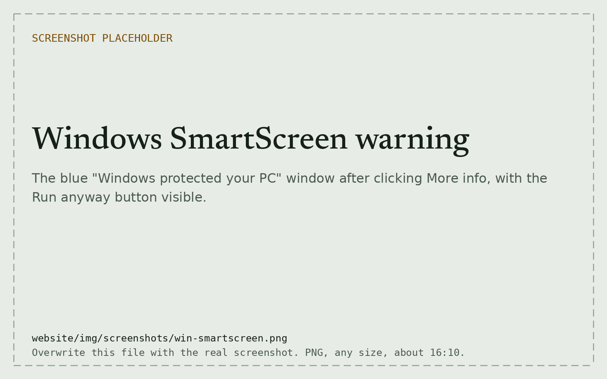
Click Install. The installer copies WildID and the Lightroom plugin, then downloads the software WildID runs on: Python and PyTorch, several GB in total. A black text window shows the progress of that download. Leave it alone until it closes by itself.
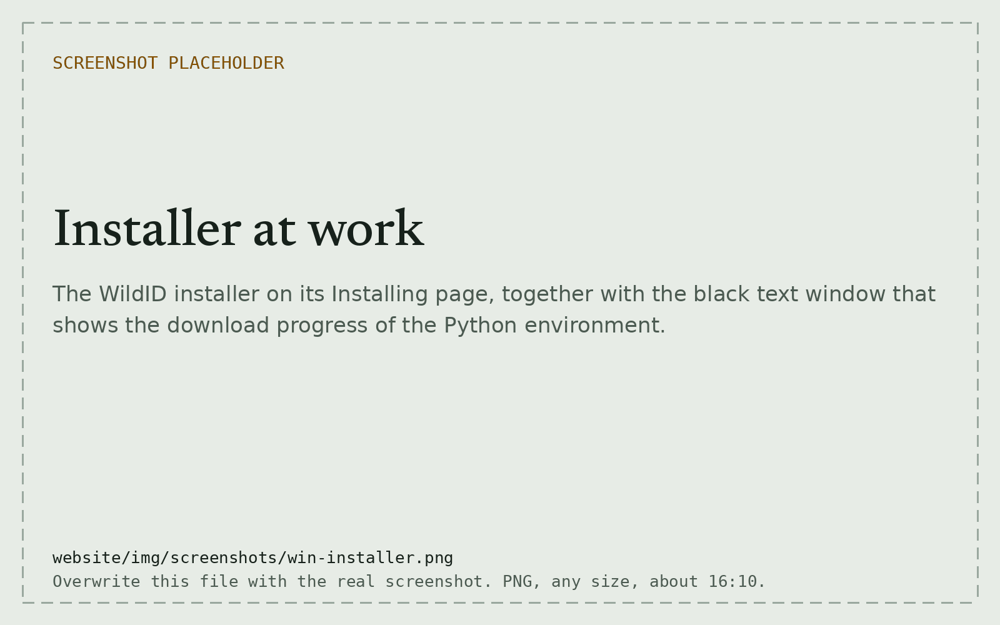
On the last page keep Run the WildID setup wizard now ticked and click Finish.
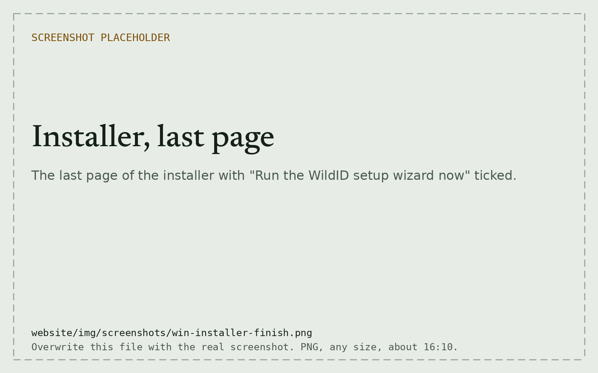
A text window opens and asks a few questions. Type an answer and press Enter. Pressing Enter on its own accepts the suggestion shown in square brackets.
The downloads start after the last answer. When they finish, the wizard tests itself with the network switched off and prints Setup complete. Press any key to close the window.
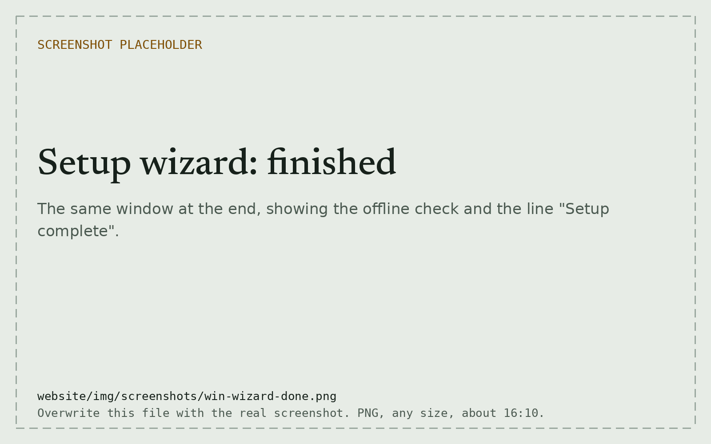
To run the wizard again later, for another model or another country, open the Start menu and choose WildID Setup.
Hugging Face is the website that hosts the BioCLIP model files, and the wizard downloads them from there. The files are public. You need no account and no token, so leaving the question empty is the normal choice.
A token is a personal key that tells Hugging Face which account a download belongs to. It helps in one situation: when Hugging Face slows down or refuses downloads that come without an account, which can happen on a busy or shared internet connection. If a download stops with a message about rate limits or the number 429, run the wizard again and give it a token.
hf_.The token is saved in your Windows user profile and is sent to huggingface.co only. A read token cannot change anything in your account, and you can delete it on the same Hugging Face page at any time.
Start Lightroom Classic. If it was open during the installation, close it and start it again. The installer has already put the plugin where Lightroom loads it by itself, so there is nothing to add by hand.
To check, open File → Plug-in Manager. WildID should be in the list on the left, shown as installed and running.
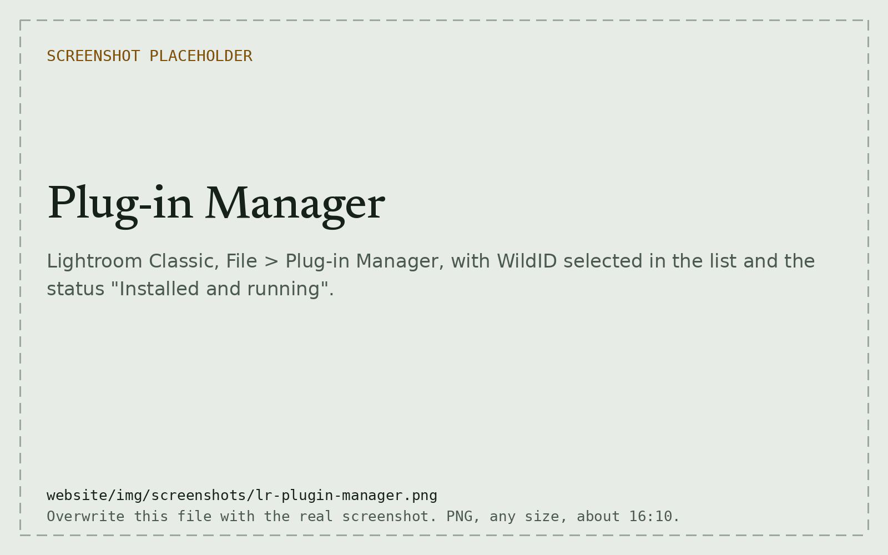
In the Library module, select a few photos of animals. Ten to twenty are enough for a first try. Then choose Library → Plug-in Extras → Identify species with WildID…
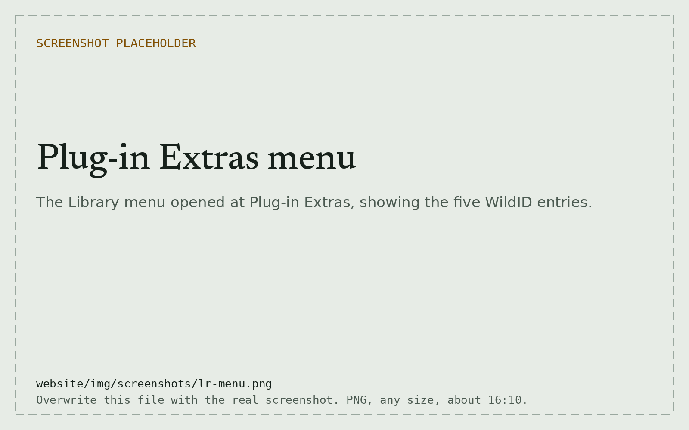
A dialog opens. These are the settings that matter the first time:
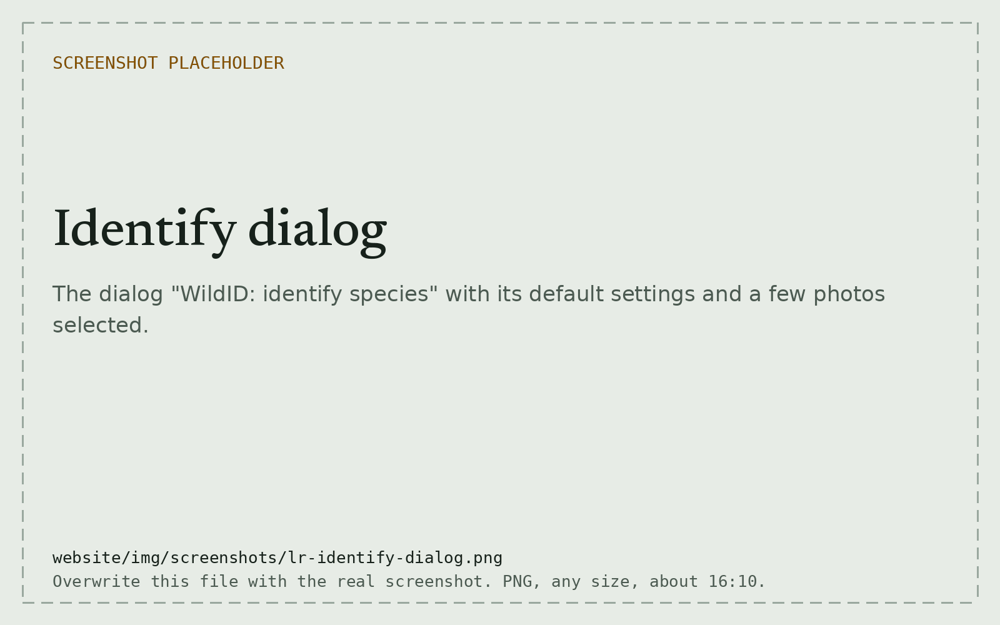
Click Identify. The first run of a session starts the engine and loads the model. That took about ten seconds on the test computer and can take longer on a slower disk. A progress bar in the top-left corner of Lightroom then counts through the photos. You can cancel at any time, and photos that were already processed keep their results.
When the run ends, a summary tells you how many photos were identified, how many were flagged for review and how many failed.
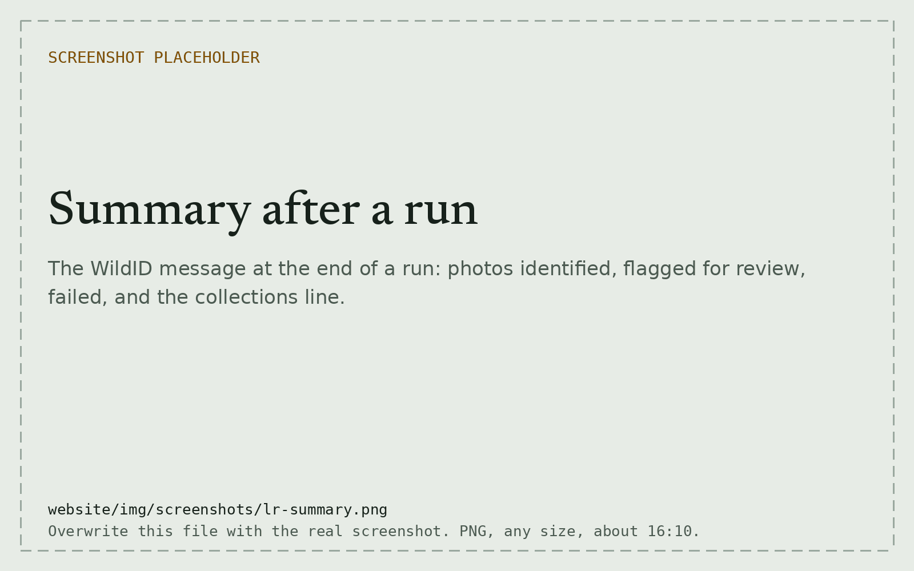
WildID › Mammalia › Panthera › Panthera onca. The common name, here Jaguar, is stored as a synonym, so a search for “jaguar” finds the photo. Photos with an animal also get the plain keyword animals, and wildlife unless the species is a domestic one.WildID with a set for each class, a set for each genus and a collection for each species, for example WildID / Mammalia / Panthera / Panthera onca — Jaguar. Photos the model was unsure about are also in WildID / _review.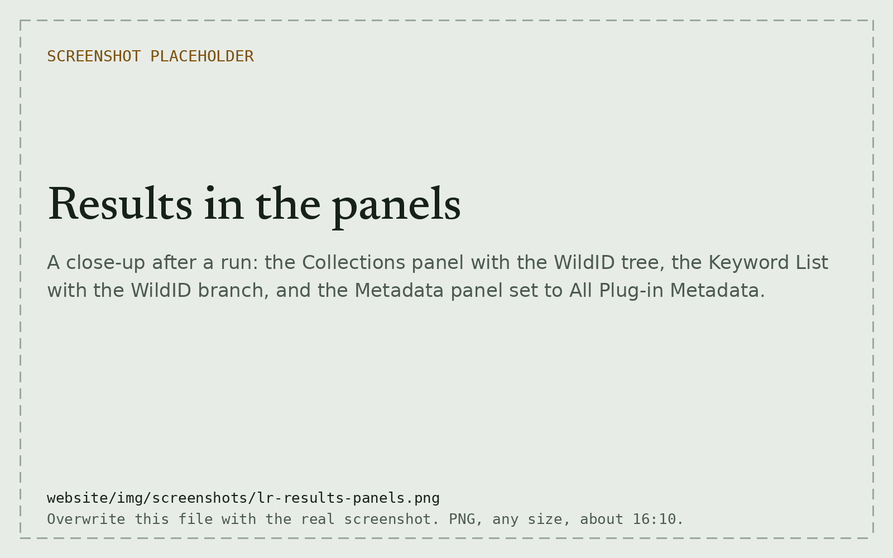
A place list and the crop are the two settings that improve the answers most. A list limits the candidates to the species recorded in the country or region where you took the photos.
Choose Library → Plug-in Extras → WildID: prefetch place list…, type the country, and a region if you want one, then click Fetch. This is the only step that uses the internet after the setup. In the Identify dialog, set Candidates to “a prefetched place” and type the same country.
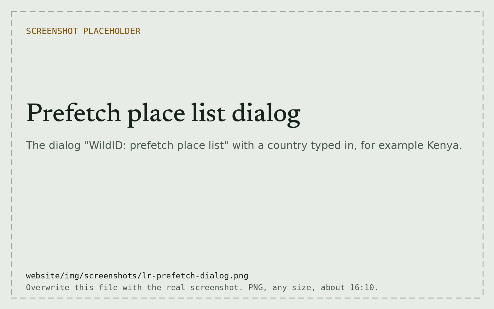
Open the collection WildID / _review. For each photo, decide whether the name is right, and correct it by hand where it is not. When you are done, select the photos and choose Library → Plug-in Extras → WildID: mark as reviewed. The photos leave the review collection and lose the review keyword.
If you correct a name by hand, put your own keyword outside the WildID branch. A later run replaces everything under WildID on the photos you run it on.
You do not start anything by hand. The plugin starts the engine when you run Identify, and the engine stops by itself after 15 minutes without work, which frees the graphics card for other programs. WildID: server status… in the same menu shows whether it is running and lets you stop it at once.
To update, download the newer installer and run it. It replaces the engine and the plugin together and keeps the downloaded models and place lists. Restart Lightroom afterwards.
To uninstall, open Windows Settings → Apps → Installed apps, find WildID and choose Uninstall. The models and place lists stay on the disk so that a later reinstall is quick. To remove them as well, delete the folders %LOCALAPPDATA%\wildid and %USERPROFILE%\.cache\huggingface. Other AI programs also use the second folder, so check it before you delete it.
Restart Lightroom Classic. If WildID is still missing, check that the folder %APPDATA%\Adobe\Lightroom\Modules\wildid.lrplugin exists. You can also add that folder by hand with the Add button in the Plug-in Manager. If the Plug-in Manager says the plugin needs a newer version, update Lightroom Classic to version 15 or later.
A part you selected in the dialog was not downloaded: the second model, the crop stage or SpeciesNet. Open the Start menu, run WildID Setup again and choose that part.
The species list for that place has not been fetched yet. Use WildID: prefetch place list… first, with the same spelling of the country and region.
Open WildID: server status… and choose Start server, or start WildID Server from the Start menu. If that fails, run WildID Setup once more. It checks the installation and the downloads again.
Choose bioclip-2, untick “Keep both models loaded” and close other programs that use the graphics card. How much graphics memory each model needs
WildID skips virtual copies, videos and photos whose original file is offline and has no Smart Preview. It reads JPEG and the common RAW formats: ARW, NEF, CR2, CR3, ORF, RAF, RW2 and DNG. Other file types can fail, and the summary lists them.
That is expected. The engine then runs without a window.
Wrong species names are a different matter. They come from the model and the settings, as explained under When a name is wrong. For faults in WildID itself, report a problem on GitHub.
This guide is for photographers who want WildID inside Lightroom Classic on a Mac. You need no Python, no Homebrew and no developer tools. You type one line into Terminal, and a setup wizard then asks a few questions and downloads the model.
Get WildID-<version>-macos-arm64.zip from the latest release. The file is small, about 23 MB, because the large parts are downloaded during the installation.
Each release lists the SHA-256 checksum of the zip in SHA256SUMS.txt. To compare, open Terminal and run:
shasum -a 256 ~/Downloads/WildID-*-macos-arm64.zipThe long value it prints must be the same as the one in SHA256SUMS.txt.
Double-click the zip in Finder, unless your browser has already unpacked it. You get a folder named WildID-<version>-macos-arm64 in Downloads. Open Terminal, which is in Applications → Utilities, type the following line with the name of your folder, and press Return:
bash ~/Downloads/WildID-<version>-macos-arm64/install.shTo avoid typing the path, type bash and a space, then drag the file install.sh from the folder into the Terminal window.
The word bash in front matters. WildID is not signed with an Apple developer certificate yet, so macOS refuses to start the installer when you double-click it. Handing the file to bash, a program that is part of macOS, is not subject to that check.
The installer does not ask for a password. It installs for your user account only, into ~/Library/Application Support/WildID.
The installer copies WildID and the Lightroom plugin, then downloads the software WildID runs on: its own Python and PyTorch, about 1.2 GB on disk. It never uses a Python that is already on your Mac. The Terminal window shows the progress.
At the end it asks whether to put the wildid commands on your PATH. Press Return for yes. That adds one line to the file ~/.zprofile, so that the next step works by name. The last lines the installer prints show the command for the next step.
Open a new Terminal window, type wildid-setup and press Return. The wizard asks a few questions. Type an answer and press Return. Pressing Return on its own accepts the suggestion shown in square brackets.
The downloads start after the last answer. When they finish, the wizard tests itself with the network switched off and prints Setup complete.
To run the wizard again later, for another model or another country, type wildid-setup in Terminal again. If you ever paste a Hugging Face token, use Command+V. Nothing appears while you paste. That is intended.
Start Lightroom Classic. If it was open during the installation, quit it and start it again. The installer has put the plugin where Lightroom loads it by itself.
To check, open File → Plug-in Manager. WildID should be in the list on the left, shown as installed and running. If it is missing, add it by hand: click Add, press Command+Shift+G, paste the following path and confirm.
~/Library/Application Support/Adobe/Lightroom/Modules/wildid.lrpluginFrom here on WildID works as it does on Windows. Continue with Identify your first photos in the Windows guide and with the steps after it: what changes in the catalog, place lists and the review collection. The menus are in the same place, under Library → Plug-in Extras.
One line of the Identify dialog differs. On a Mac it names the chip and the memory WildID may use, for example “Apple M5 Pro, unified memory: 40.2 GB usable”, where Windows names the graphics card. Speed and memory on a Mac
You do not start anything by hand. The plugin starts the engine when you run Identify, and the engine stops by itself after 15 minutes without work, which gives the memory back to your other programs. WildID: server status… in the same menu shows whether it is running and lets you stop it at once.
To update, download the newer zip and run its install.sh the same way. It replaces the engine and the plugin together and keeps the downloaded models and place lists. Restart Lightroom afterwards.
To uninstall, run this line in Terminal:
bash "$HOME/Library/Application Support/WildID/uninstall.sh"It removes WildID, the plugin and the line in ~/.zprofile. The models and place lists stay on the disk so that a later reinstall is quick. To remove them as well, add --purge to the end of that line. Two folders of uv, the tool that fetched Python, stay in either case: ~/.local/share/uv and ~/.cache/uv. Delete them by hand if nothing else on your Mac uses uv.
The mark that macOS puts on downloaded files is still on it. Remove it with this line in Terminal, then try again:
xattr -dr com.apple.quarantine "$HOME/Library/Application Support/WildID"Usually the internet connection dropped. Everything else is in place. Run wildid --version in a new Terminal window once you are online. The command downloads what is missing.
Open a new Terminal window. The PATH line only counts for windows opened after the installation. If you answered no to the PATH question, use the full path, typed with the quotation marks:
"$HOME/Library/Application Support/WildID/bin/wildid-setup"Start it by hand with a log file, then read what the file says:
WILDID_SERVER_LOG=~/wildid-server.log wildid-server-startThe file ~/Library/Application Support/WildID/install.log records what the installer did. Problems inside Lightroom are the same as on Windows, so see If something goes wrong in the Windows guide. Wrong species names come from the model and the settings, as explained under When a name is wrong. For faults in WildID itself, report a problem on GitHub.
Lightroom Classic does not exist for Linux, so here WildID is a command-line tool. It identifies whole folders and can write keyword sidecar files that Lightroom reads when you import the photos on another computer.
git and curl. WildID has been tested on one Linux machine, running Gentoo, with an RTX 4090.nvidia-smi and read the CUDA version in its header. Without such a card WildID runs on the processor, at seconds per photo.WildID uses uv to fetch the right Python version and every library it needs. Nothing is installed into your system Python. Skip this step if you already have uv.
curl -LsSf https://astral.sh/uv/install.sh | shgit clone https://github.com/Trogious/wildid.git
cd wildid
uv syncuv sync creates the environment in the folder .venv and downloads about 5 GB, most of it PyTorch with CUDA.
uv run wildid prefetch --cropThis downloads BioCLIP 2 (4.5 GB) and the MegaDetector crop stage (52 MB), then checks that everything runs without a network. No Hugging Face account is needed. Add --model all for BioCLIP 2.5 as well (7.3 GB) and --second-opinion for SpeciesNet (209 MB).
uv run wildid tests/fixtures/bear.jpgThe first line of the result should name Ursus arctos, the brown bear. Results are printed as one text block per photo, in this form:
DSC04512.ARW
1. Panthera onca Jaguar 0.962
2. Puma concolor Puma 0.021
3. Leopardus pardalis Ocelot 0.009Fetch the species list for the country once, then point WildID at a folder. Subfolders are included.
uv run wildid prefetch --country Kenya
uv run wildid ~/Pictures/kenya --crop --country KenyaTo use the results in Lightroom Classic on another computer, write keyword sidecars next to your RAW files before you import them:
uv run wildid /media/card/DCIM --crop --country Kenya --write-xmpTo run WildID from any folder, name the project folder: uv run --project ~/wildid wildid PATH. More commands and options
To update, run git pull and uv sync in the wildid folder. To remove WildID, delete that folder and ~/.cache/wildid. The BioCLIP models are in ~/.cache/huggingface, which other AI programs also use.